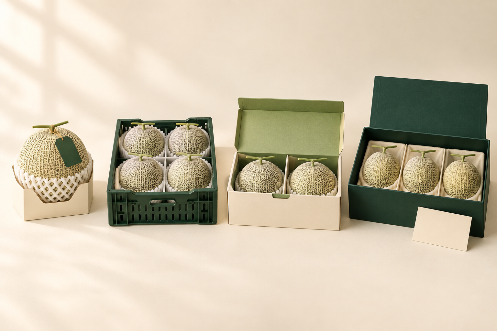
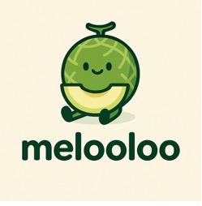
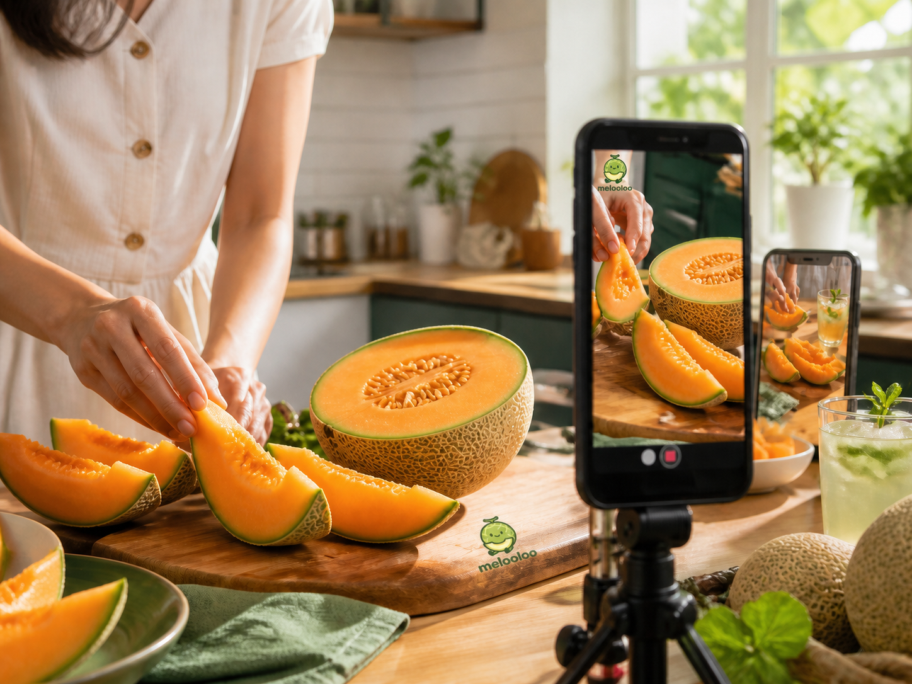
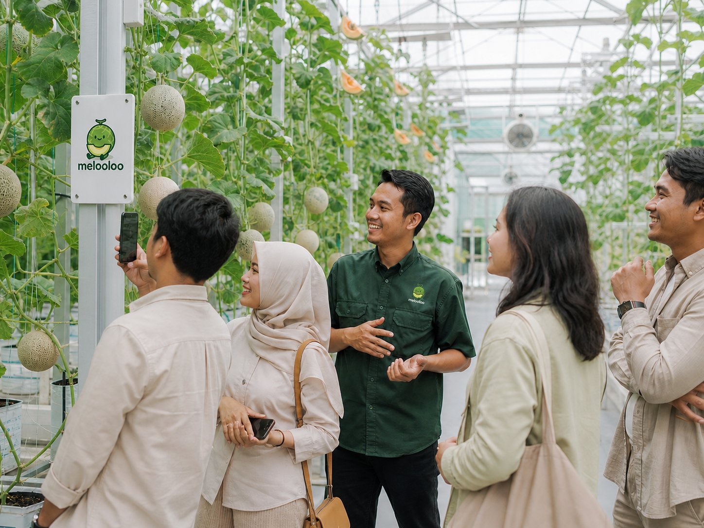

Satu buah.
Empat cara membeli.
Melon premium lokal dari smart greenhouse Jakarta. Empat penawaran dengan kebutuhan, kemasan, dan kanal yang berbeda.
Referensi dari rencana bisnis terbaru. Status penjualan nyata dan hasil uji panen belum diverifikasi; detail desain berstatus konsep.

Pilih format untuk melihat brief.
Master brand tetap melooloo. Buah sama; format membedakan kebutuhan dan jalur pembelian. Klik nama lini untuk melihat isi, harga basis, kemasan, dan arah visual.
Outlet hasil panen dan pengembangan.
Grade A = 90%, B = 5%, C = 5% pada model. Grade A+ adalah seleksi visual di dalam Grade A, tanpa alokasi hasil panen tambahan.
| Outlet | Peran | Basis model | Pedoman |
|---|---|---|---|
| Grade B | Outlet hasil panen di luar standar Grade A | Rp 35.000/kg basis Y0-Y1; 5% produksi | Spesifikasi cacat kosmetik, Brix, buyer, dan kemasan belum cukup rinci. Usulan: box utilitarian berlabel Grade B secara jelas. |
| Grade C | Bahan baku untuk pembeli pengolahan | Rp 15.000/kg basis Y0-Y1; 5% produksi | Bab II menyebut industri jus, sirup, dan makanan olahan. Tetap melalui kelayakan pangan; jangan memakai citra Gift Edition. |
| Pengembangan | Sumber | Status |
|---|---|---|
| Ready-cut / fresh-cut | Potential Product Bab IV | Porsi, kemasan, umur simpan, harga dan proses belum ditetapkan. |
| Seasonal batch / limited harvest | Potensi lini Bab IV | Tema kampanye dapat mengikuti format inti; belum menjadi SKU permanen. |
| Jus, minuman, dessert, kafe melon | Filosofi nama dan pengembangan merek | Arah ekstensi; belum ada spesifikasi atau model penawaran final. |
| Snack buah kering / selai | Pengembangan setelah Y5 di Bab VII | Belum menjadi bagian katalog peluncuran. |
Open Farm adalah pengalaman/touchpoint yang direncanakan; belum ditemukan penawaran tiket atau jadwal final. IoT/dashboard mendukung produksi. QR mendukung bukti asal.
Premium. Local. Consistent.
Premium yang ramah: warna natural, ruang cream, buah yang terlihat jelas, tipografi modern rounded, dan informasi yang rapi.
#1F4D2EIdentitas utama, judul, CTA, box gift#FAF3E3Latar foto, bidang label dan halaman#97BC62Aksen sekunder; selalu dengan teks forest#F49D37Aksen kecil, highlight; teks gelap#EAF3EABidang informasi dan kartu#222222Teks isi#B85042Catatan internal; bukan kode grade
Gunakan identitas yang sudah ada.
Logo sumber DOCX, 249×254 px, untuk tinjauan. Dapatkan master vektor sebelum produksi cetak; gunakan proporsi dan maskot asli. Ruang bebas usulan setinggi huruf o di wordmark.
Tipografi & hierarki
Poppins SemiBold + Nunito Sans, maksimal dua keluarga. Urutan: merek → nama format → isi → manfaat → mutu → harga/unit → CTA.
Ukuran digital usulan: heading 40–56 px, isi 16–18 px, caption ≥13 px. Preview offline memakai font sistem.
Warna & motif
Cream di forest; forest/charcoal di cream, moss, oranye atau tint. Hindari teks putih kecil di moss/oranye.
Motif netting 6–8% opacity, area teks dan QR tetap bersih. Logo kampus hanya untuk deck akademik.
Buah dahulu. Asal yang dapat dibuktikan.


Arah fotografi
- Fujisawa: buah round netted, daging oranye. Sumber Rijk Zwaan.
- Soft daylight, cream, bayangan natural; satu white balance dan sudut 3/4.
- Prioritaskan foto kebun, tim, QC dan panen asli.
- Katalog 1:1, feed 4:5, story 9:16, hero 16:9; safe margin 10–15%.
- Potongan menunjukkan isi, tidak menyatakan ready-cut sudah tersedia.
Arah kemasan
- Signature: satu buah terlihat; kemasan rak yang protektif.
- Chef: crate/box rantai dingin, batch dan spesifikasi jelas.
- Weekly: dua kompartemen, konteks langganan dan jadwal.
- Gift: rigid box tiga buah, inlay dan kartu narasi.
- Uji ventilasi, benturan, stacking, kondensasi dan handling sebelum produksi.
Informasi mutu, tanpa data rekaan.
Signature · Grade A
Fujisawa RZ F1
[BERAT BERSIH AKTUAL]
Simulasi tipografi. Kemasan final memakai artwork logo asli. Ukuran label 90×60 mm dari brief lama masih konsep.
Field yang saling cocok
Nama format, varietas, grade, berat aktual, batch, tanggal panen, data QC dan petunjuk handling.
QR mengarah ke batch yang sama pada label. Uji di permukaan kemasan, ukuran fisik aktual, pencahayaan ritel dan beberapa ponsel.
Nutrisi, badge sertifikasi dan klaim residu menggunakan bukti yang relevan. Angka target tidak ditempel sebagai hasil ukur.
Copy mengikuti hasil dan cakupan layanan.
| Klaim | Dasar yang ada | Bukti sebelum publikasi |
|---|---|---|
| Fujisawa RZ F1 | Varietas inti pada BP; daging oranye dikonfirmasi Rijk Zwaan. | Cocokkan benih dan batch sebelum foto/label varietas dipakai. |
| Grade A: target ≥15° Brix | Ambang internal di Bab IV terbaru; beberapa bagian lama masih ≥14°. | Data QC dan prosedur sampling; tandai angka contoh sebagai contoh, bukan hasil panen. |
| Panen dan pengiriman | Pengiriman hari panen pada Weekly; janji <24 jam ada pada narasi brand. | Tanggal/jam panen, dispatch, dan penerimaan; tampilkan klaim sesuai cakupan kanal. |
| Residu pestisida | BP memuat bahasa absolut dan bahasa budidaya minim/terkontrol. | Hasil uji yang relevan sebelum badge "bebas residu"; tanpa bukti, jelaskan proses terkontrol. |
| Zero-mile / jejak karbon | Narasi kedekatan lokasi di Jakarta. | Gunakan asal lokal sebagai fakta; angka jarak atau pengurangan emisi perlu catatan aktual. |
| QR traceability | QR wajib pada setiap buah menurut Bab IV. | Link batch benar, terbuka di ponsel, data cocok dengan label; gambar QR konsep tidak operasional. |
Rp75.000/kg B2B dan Rp99.000/kg B2C adalah basis model Y0–Y1, bukan pengecekan harga live. Gift Rp535.000 adalah harga box rencana. Dua buah Weekly pada rata-rata 1,8 kg menghasilkan ilustrasi Rp356.400/pengiriman; empat minggu Rp1.425.600. Biaya antar, pajak, berat aktual dan pembayaran belum dirinci, sehingga ilustrasi tersebut bukan penawaran final.
Daftar aset dan pemeriksaan.
| ID | Aset | Isi | Rasio |
|---|---|---|---|
| H01 | Hero buah | Utuh + belah untuk menunjukkan daging oranye; bukan produk ready-cut. | 4:5 + 16:9 |
| S01 | Signature | Satu buah dengan kemasan, tampak 3/4 dan label close-up. | 1:1 + 4:5 |
| C01 | Chef Selection | Kemasan kirim, buah seragam, skala ukuran, lembar spesifikasi. | 4:3 + 16:9 |
| W01 | Weekly | Dua buah dan box; kalender pengiriman sebagai layer desain. | 1:1 + 4:5 |
| G01 | Gift Edition | Box terbuka tiga buah, box tertutup, detail kartu dan inlay. | 1:1 + 4:5 |
| Q01 | Bukti kualitas | Alat ukur dan catatan QC asli, nomor batch cocok. | 4:3 |
| T01 | Asal panen | Kebun asli, tim asli, panen dan kemasan pada lokasi yang sama. | 16:9 |
| L01 | Label dan trace | Artwork editable, QR produksi, layar batch yang benar. | Vektor + mobile |
- Nama, isi, grade dan kanal sesuai.
- Logo master vektor tersedia.
- Foto asli dan konsep diberi status jelas.
- Berat/QC/panen/batch cocok.
- QR produksi diuji.
- Harga mempunyai unit dan periode.
- Packaging diuji secara fisik.
- Dieline, artwork dan proof cetak tersedia.
Perbedaan yang memengaruhi desain.
| Topik | Temuan | Keputusan guideline |
|---|---|---|
| Empat format vs nama varietas | Panduan lama memberi contoh Honey/Rock/Pearl. | Gunakan Signature/Chef Selection/Weekly/Gift Edition; nama varietas di panel spesifikasi. |
| Brix 14 vs 15 | Panduan, dokumen dan job description tidak seragam. | Arah Bab IV terbaru = target ≥15° Grade A; operasi perlu satu SOP dan ambang release. |
| Satuan direct vs proteksi kanal | Sebagian ringkasan/touchpoint lama mengesankan satuan dijual langsung. | Signature lewat mitra; direct hanya Weekly dan Gift sesuai Tabel 4.21. |
| Twin pack vs Weekly | Brief visual lama memakai twin pack tanpa komitmen. | Box dua buah adalah pengiriman Weekly; tampilkan minimum empat minggu. |
| Gift dua buah pada aset lama | Gambar packaging lama menampilkan box dua buah. | Gift Edition terbaru harus tiga buah; aset lama hanya referensi mood. |
| Logo raster dan logo AI | Logo sumber DOCX 249×254 px; visual AI memakai beberapa versi. | Gunakan sumber asli untuk tinjauan; dapatkan master vektor sebelum produksi cetak. |
| Harga dan grade sekunder | Risk Matrix menyebut entry Grade B Rp 89K, model memakai Rp 35K. | Katalog sekunder mengikuti Assumption; keputusan entry tier membutuhkan rekonsiliasi model. |
| Gift price rounding | 3×1,8×Rp99.000 = Rp534.600; Bab IV menetapkan Rp535.000. | Tampilkan Rp535.000/box; ekuivalen Rp99.000/kg adalah pembulatan, bukan harga timbang persis. |
Sumber, file editable, dan panduan cetak.
| ID | Sumber | Lokator | Penggunaan |
|---|---|---|---|
| S1 | Melooloo_AfterSeminar2_BabIV_rev_28Sep2026.docx | Bab IV: Branding [0646-0686], Produk [0687-0758], Tabel 4.19-4.21, Distribusi [0803-0805] | Nama empat penawaran, kanal, isi, kemasan, target mutu. |
| S2 | BAB8_FINAL_29Jul2026.xlsx | Assumption B11, B15:C18, B23:C25; Summary | Bobot model 1,8 kg; harga basis; grade mix 90/5/5. |
| S3 | Visual_Guidance_AI_Design.md | Bagian 1.1-1.7; A1-A3 | Palet, rounded lowercase, motif netting, fotografi, arah kemasan. |
| S4 | Panduan_Bab_1 / 3 / 4 / 5 (.docx) | Tujuan bab, produk-pembeli-nilai, branding, strategi produk, operasi | Kerangka kelengkapan; contoh lama bukan sumber angka terkini. |
| S5 | 50A_Klp 6_Melooloo_Seminar 2_29Jul2026.docx | Bab II, pasokan benih Bab V, pengembangan Bab VII | Outlet Grade C, varietas inti dan arah pengembangan. |
| S6 | Rijk Zwaan: In Indonesia we grow the sweetest melons from the best seeds | 14 Desember 2023; bagian Outstanding Brix level; diakses 28 Sep 2026 | Fujisawa RZ adalah Silver Coral berdaging oranye; bukan bukti mutu panen Melooloo. |
| S7 | Marketing_Touchpoints_Visual/01-07 (.png) | Aset AI terdahulu; diperiksa visual pada 28 Sep 2026 | Referensi suasana; beberapa logo/isi pack tidak sesuai sumber terbaru. |
Rijk Zwaan / rujukan daging oranye Fujisawa. Panduan bab menentukan struktur; contoh lama di panduan tidak menjadi sumber harga atau SKU terkini. Detail dokumentasi ada pada file Markdown.